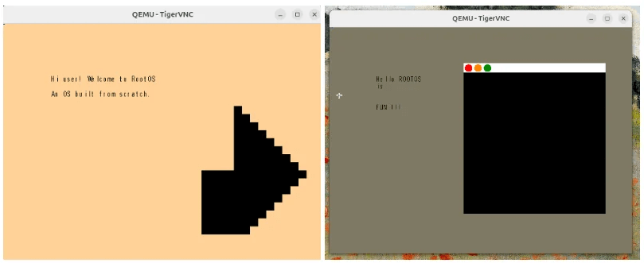

As a man playeth
The search for
a project of one's own...
De La Salle University
These are my final projects for the classes I took at
DLSU
Operating System from scratch
-
Built an OS from scratch in
C and Assembly for Advanced
Operating Systems and Networking class, wrote almost every line
of C-code (with some GPT help) with blood on my eyes and QEMU
crashing in the background
-
Reference: Professor Raquel T. Marasigan (email) (linkedin)
-
Designed for pedagogical teaching similar to xv6, implementing
recommendations based on
this paper
-
Early screenshots of the operating system in action: welcome
screen to the left, and desktop on the right. In the right, we
can see an example of the editor being used with the words
“Hello rootOS is FUN!!!” typed into the screen, and a window
opened, demonstrating the multi-tasking abilities. If you
noticed it on the right, there's also a tiny easter egg - a
configurable crucifix ✝️ cursor in honor of
Terry Davis.

-
See my professor's recommendation letter
highlighting the project
Distributed serverless E‑commerce app
-
Built for a class called Advanced Systems Design and
Implementation, wrote it in
JavaScript + NodeJS and deployed
to AWS
-
Reference: Professor Fernando Jabon Jr. (email)
only positive sum games